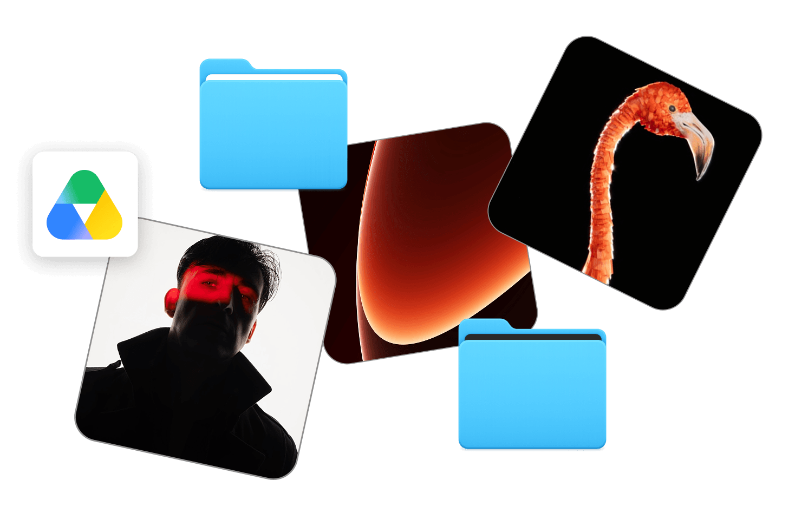
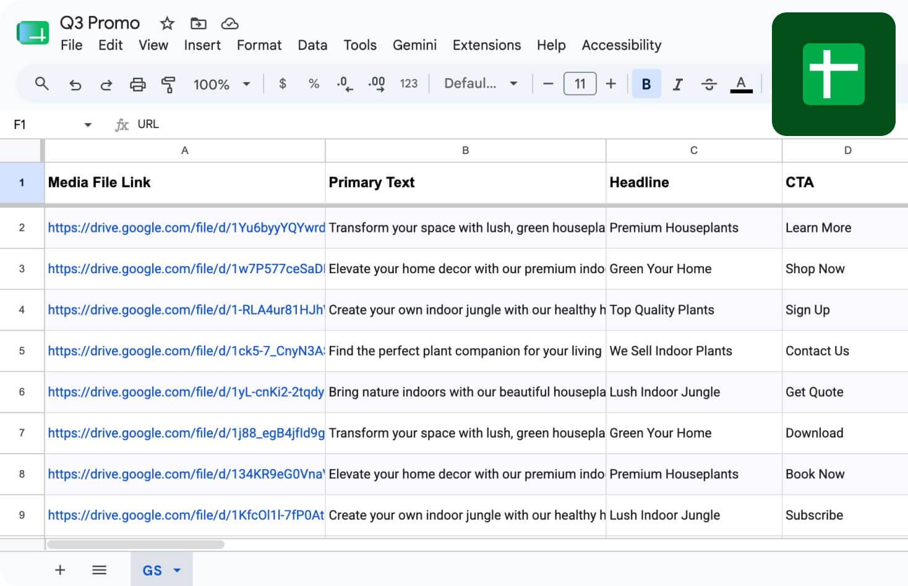
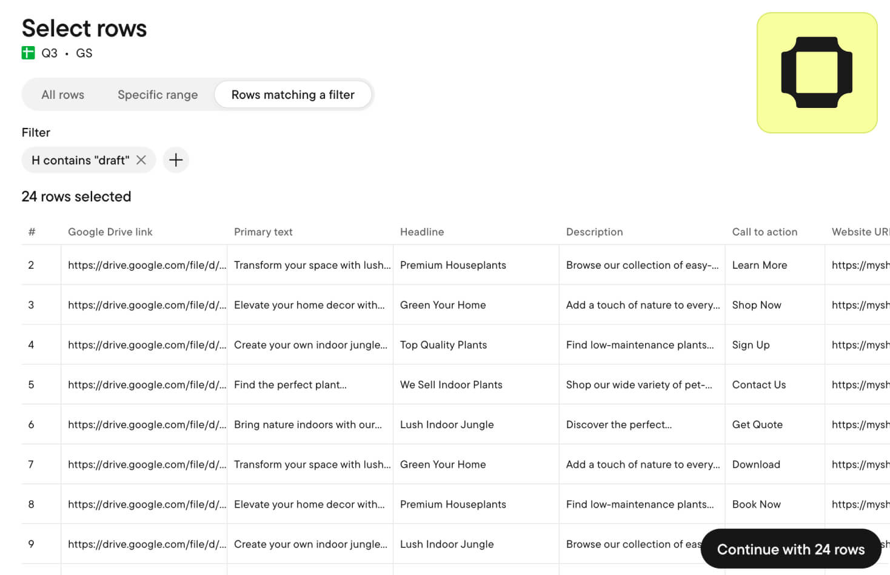
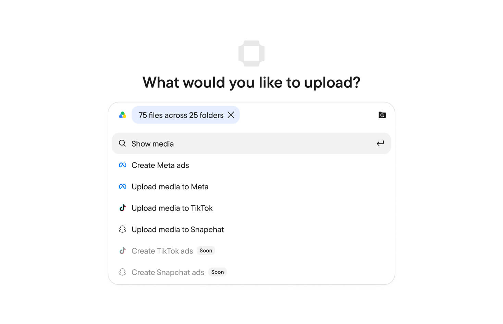
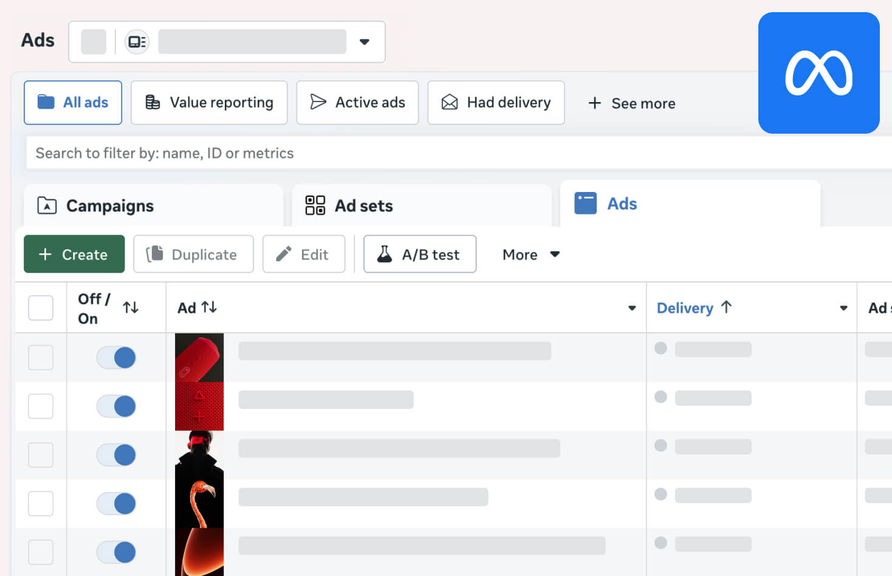

Connect your Google Drive folders
Turn your Google Drive folders into one library in Stage. Read-only access. Your files stay in Drive, untouched
Connect your Google Spreadsheet
Use your planning Sheet: your columns, your statuses, your structure.
Filter what to launch by status
Filter by your own statuses — "draft," "ready," "to test," however your team labels them.
Choose how ads are built
Create new ads, or duplicate a proven setup and swap new creatives in
Push to ad accounts automatically
Your ads are ready to go live. Review and set them live when you're ready




